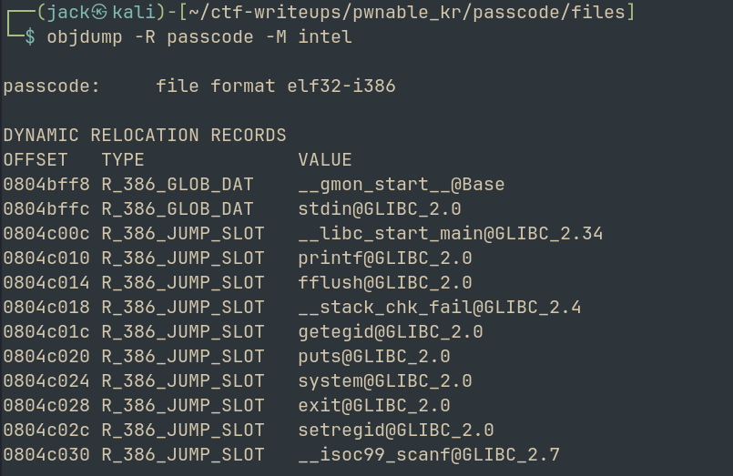

pwnable.kr · CTF writeup
Passcode
Challenge: https://pwnable.kr/play.php
Hello Hackers!
Welcome back to another writeup on a pwnable.kr challenge Today we will be looking at passcode
The hint:
Mommy told me to make a passcode based login system. My first trial C implementation compiled without any error! Well, there were some compiler warnings, but who cares about that?
--> 'Compiler warnings' looks interesting
Let us read the source code
From the source code, we find:
ha! mommy told me that 32bit is vulnerable to bruteforcing :)
That is interesting. Maybe it has to do something with bruteforcing
The file looks simple enough with checks of passcode1 = 338150 and passcode2 = 13371337 But when we try to run the binary and use these creds, we get a segmentation fault.
Lets try to compile the binary ourself to see what warnings were encountered
Well we cant, because the original code is a lil different. We get error while trying to complile
Lets analyze the binary using BinaryNinja
Another flaw we notice is that passcode1 and 2 expect pointer but get int (%d in scanf) --> in scanf("%d", smtg), the smtg is the destinaion address. Hence we need to pass &passcode1
After some research, we find that fflush(stdin) is the problem
What happens is that we enter out passcode1 Then when it flushes, it doesnt know which destination to put it in because the given destination is not even an address So if we just execute the flagread instead of fflush(), we can retrieve the flag
Lets analyze the functions and addresses using pwndbg
0x08049000 _init
0x08049040 __libc_start_main@plt
0x08049050 printf@plt
0x08049060 fflush@plt
0x08049070 __stack_chk_fail@plt
0x08049080 getegid@plt
0x08049090 puts@plt
0x080490a0 system@plt
0x080490b0 exit@plt
0x080490c0 setregid@plt
0x080490d0 __isoc99_scanf@plt
0x080490e0 _start
0x08049120 _dl_relocate_static_pie
0x08049130 __x86.get_pc_thunk.bx
0x08049140 deregister_tm_clones
0x08049180 register_tm_clones
0x080491c0 __do_global_dtors_aux
0x080491f0 frame_dummy
0x080491f6 login
0x080492f2 welcome
0x08049364 main
0x080493c0 __stack_chk_fail_local
0x080493d8 _fini
When we use cyclic pattern as name, we find that SEGMENTATION FAULT occurs at 0x61616179 at 'yaaa'
cyclic -l yaaa
Finding cyclic pattern of 4 bytes: b'yaaa' (hex: 0x79616161)
Found at offset 96
Hence we found the offset to be 96
So we can use the GOT address of fflush and the address that gives us the flag And if we craft our exploit carefully we should be able to pwn this
--> NOTE: to dump GOT, use:
objdump -R passcode -M intel

Writing exploit.py (attached)
We retrieve the flag!
s0rry_mom_I_just_ign0red_c0mp1ler_w4rning
Another challenge down. We learnt about the implications caused by scanf, fflush() and also about GOT addresses.
See you with another writeup soon, till then
Happy Hacking!